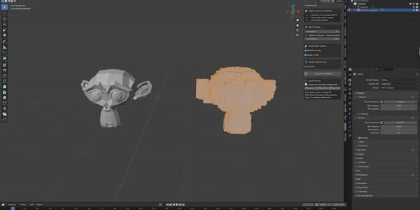
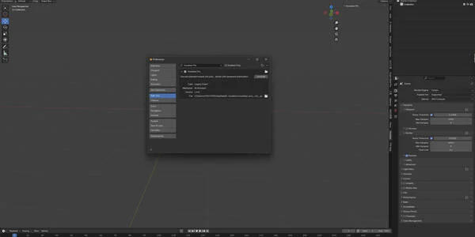
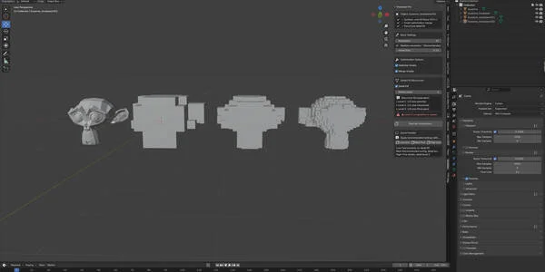
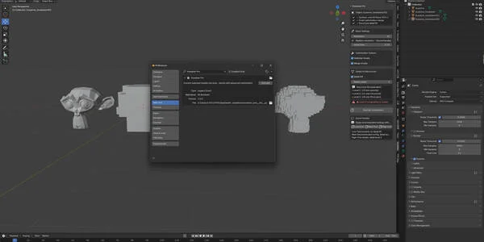
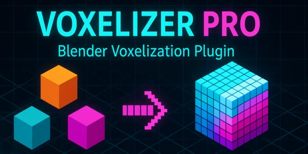
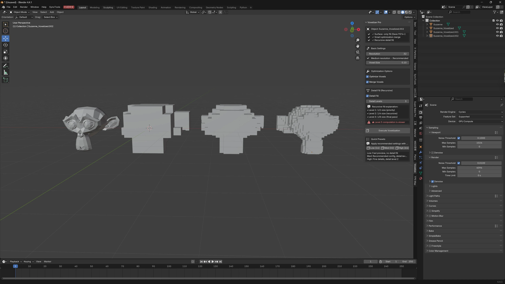
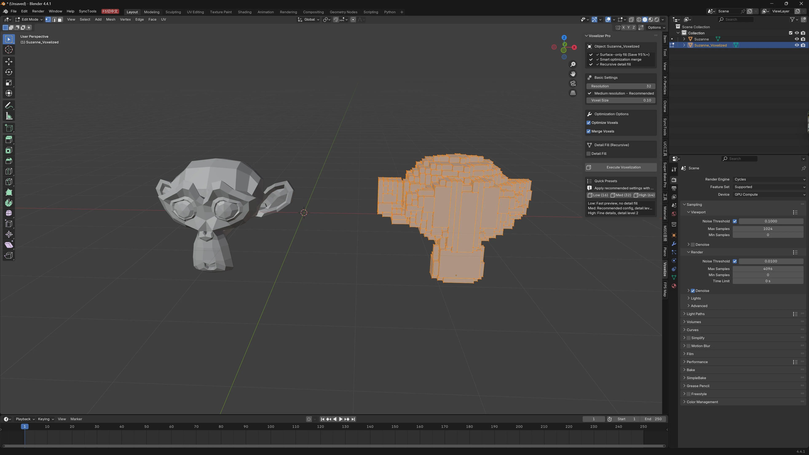
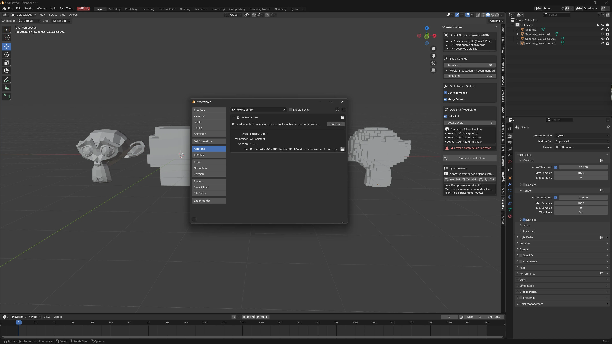

Voxelizer Pro - 高级模型体素化工具（适用于 Blender）
$8.00相册






产品信息
描述
Voxelizer Pro – 高级模型体素化工具（适用于 Blender）
将您的 3D 模型以前所未有的效率和控制力转换为令人惊叹的像素化体素艺术。 Voxelizer Pro 是一款专业级 Blender 插件，可将任何网格转换为优化的体素块——非常适合游戏资源、风格化渲染和创意项目。

✅ KEY FEATURES
✓ 仅表面体素化（节省 95%+ 内存）
与传统的填充整个体积的体素化工具不同，Voxelizer Pro 智能地仅生成表面体素，在保持视觉保真度的同时大幅减少多边形数量和内存使用。
✓ 智能优化引擎
高级合并算法自动将相邻体素组合成更大的块，最小化对象数量并提高渲染性能。
减少多达 10 倍的对象数量 相比简单的体素化。

✓ 递归细节填充系统
革命性的多级细节填充系统确保 不会丢失几何细节.
更小的体素（½、¼、⅛ 大小）会被添加 仅在需要的地方，捕捉精细特征而不会使网格膨胀。
✓ 灵活的分辨率控制
调整体素分辨率，从 5 到 200 个单位 沿最长轴。
实时反馈帮助您平衡质量和性能。
✓ 一键预设
使用优化预设即刻开始：
低 (16) – 快速 preview mode
中等 (32) – 适合大多数项目
高 (64) – 最大细节，带 2 级递归填充
✓ 用户友好的界面
整洁有序的 3D 视图侧边栏面板，包含：
直观的sliders & buttons
工具tip explanations
性能 warnings
No complex setup required.
✓ 专业级性能
优化算法配合 BVH 加速保证即使在复杂模型上也能快速处理。
智能sampling drastically reduces computation time at high detail levels.

🎨 PERFECT FOR
游戏开发者创建低多边形或体素风格资源
艺术家制作风格化渲染和动画
Minecraft 风格内容创作者
Retro/pixel-art enthusiasts
任何尝试体素美学的人
🔧 TECHNICAL HIGHLIGHTS
表面提取算法 消除内部体素
多轴贪心网格合并用于 最优块合并
BVH 加速距离查询用于细节填充
可配置的 多级细分 （最多 3 级深度）
内存高效处理大型网格
📌 系统要求
Blender 3.0 或更高版本
适用于任何网格对象
无外部依赖
🚀 易于使用
选择您的网格对象
调整分辨率和优化设置
Click “执行体素化” or choose a preset
完成——您的体素化模型已准备就绪！
✅ Voxelizer Pro
为 Blender 带来专业的体素化功能，重点关注 效率、质量和易用性.
无论您是创建游戏资源、风格化渲染还是探索体素美学，此工具都能以最少的努力提供卓越的效果。
立即开始使用，改变您的 3D 工作流程！
文档
Voxelizer Pro - 高级模型体素化工具（适用于 Blender）
将您的 3D 模型以前所未有的效率和控制力转换为令人惊叹的像素化体素艺术。 Voxelizer Pro 是一款专业级 Blender 插件，可将任何网格转换为优化的体素块，非常适合游戏资源、风格化渲染和创意项目。
核心功能：
✓ 仅表面体素化（节省 95%+ 内存）
与传统的填充整个体积的体素化工具不同，Voxelizer Pro 智能地仅生成表面体素，在保持视觉保真度的同时大幅减少多边形数量和内存使用。
✓ 智能优化引擎
高级合并算法自动将相邻体素组合成更大的块，最小化对象数量并提高渲染性能。 体验相比简单体素化减少多达 10 倍的对象数量。
✓ 递归细节填充系统
革命性的多级细节填充确保不会丢失几何细节。 系统递归地添加更小的体素（1/2、1/4、1/8 大小）仅在需要的地方，捕捉精细特征而不会使网格膨胀。
✓ 灵活的分辨率控制
调整体素分辨率，从 5 到 200 个单位 沿最长轴。 实时反馈帮助您平衡质量和性能。
✓ 一键预设
使用三个优化预设即刻开始：
- 低 (16)：快速预览模式
- 中等 (32): 适合大多数项目
- 高 (64): 最大细节，带 2 级递归填充
✓ 用户友好的界面
整洁有序的 3D 视图侧边栏面板，配有直观控件、工具提示和性能警告。无需复杂设置。
✓ 专业级性能
优化算法配合 BVH 树加速，即使在复杂模型上也能确保快速处理。 智能采样减少高细节级别的计算时间。
适合人群：
- 游戏开发者创建低多边形或体素风格资源
- 艺术家制作风格化渲染和动画
- Minecraft 风格内容创作者
- 复古/像素艺术爱好者
- 任何想要尝试体素美学的人
技术亮点：
- 表面提取算法 消除内部体素
- 多轴贪心网格合并用于 最优块合并
- BVH 加速距离查询用于细节填充
- 可配置的 细分级别 （最多 3 级深度）
- 大型网格的内存高效处理
系统要求:
- Blender 3.0 或更高版本
- 适用于任何网格对象
- 无外部依赖
易于使用:
1. 选择您的网格对象
2. 调整分辨率和优化设置
3. 点击"执行体素化"或选择快速预设
4. 完成！您的体素化模型已准备就绪
Voxelizer Pro 为 Blender 带来专业体素化功能，重点关注 效率、质量和易用性. 无论您是创建游戏资源、艺术渲染还是探索体素美学，此工具都能以最少的努力提供卓越的效果。
立即开始使用，改变您的 3D 工作流程！
产品文件
- file_1.zip(15.0 KB)
- voxelizer_pro_v1.0.0.zip(1.0 KB)